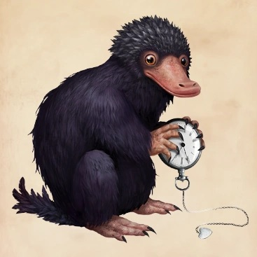

Nifflers

These creatures love to collect shings things.
Better keep an eye out on your change when these creatures are around.
What are Nifflers?
A magical beast with a long snout and a coat of black fluffy fur. They are gentle creatures, but can wreak havoc looking for more shiny objects to collect.
History
- First known history of nifflers gone back to when they were kept by goblins to search for treasure.
- 1926 - Newt Scamander had a Niffler named Teddy, who escaped during his visit in New York.
- 1927 - Same niffler produced four offspring of different colors.
- 1994-1995 Hogwarts Hagrid used them in during his fourth year’s Care of Magical Creatures class by hiding leprechaun gold in the dirt and have the students use them to find it.
- During Dolores Umbridge’s time at Hogwarts, Nifflers wrecked her office looking for shiny objects, and bit at her fingers to get her rings she wore.